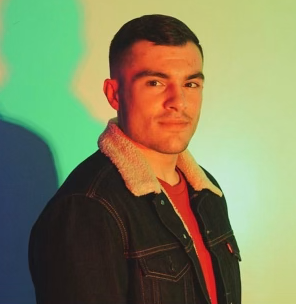

Joshua Coronel
I am a Biomedical Engineer and Data Analyst with goals of improving life and happiness through analysis and communication of data.
I have a B.S. degree in Biomedical Engineer and skills in Excel, VBA, Python, web APIs, SQL, and web frameworks from Rutgers data science bootcamp. I worked on a project to analyze heat distribution trends to identify infection risks using an app framework and statistical analysis.
I am eager to take my ever growing technical skills into a team that will continue to challenge my productivity, creativity, and collaboration.